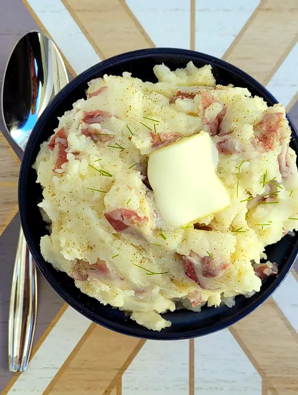

Easy Mashed Potatoes

Description:
Warm, classic, comfort food, with the flavor of unpeeled red bliss potatoes.
Ingredients:
- 2 pounds red potatoes, unpeeled
- 2 tablespoons unsalted butter, or more to taste
- 2 tablespoons milk, or more to taste
- 1 pinch celery salt, or more to taste
- salt to taste
Steps:
- Cut potatoes into quarters and place into a pot. Cover with water and bring to a boil. Reduce heat to medium-low and simmer until tender and a fork slides easily into each potato, about 20 minutes. Drain.
- Mash potatoes. Add 2 tablespoon each butter and milk. Adjust the measurements if needed-if it's dry, add more milk and if it's not creamy enough, add more butter. Add celery salt and salt; continue to mash until there are no clumps of potato left and everything is thoroughly blended.